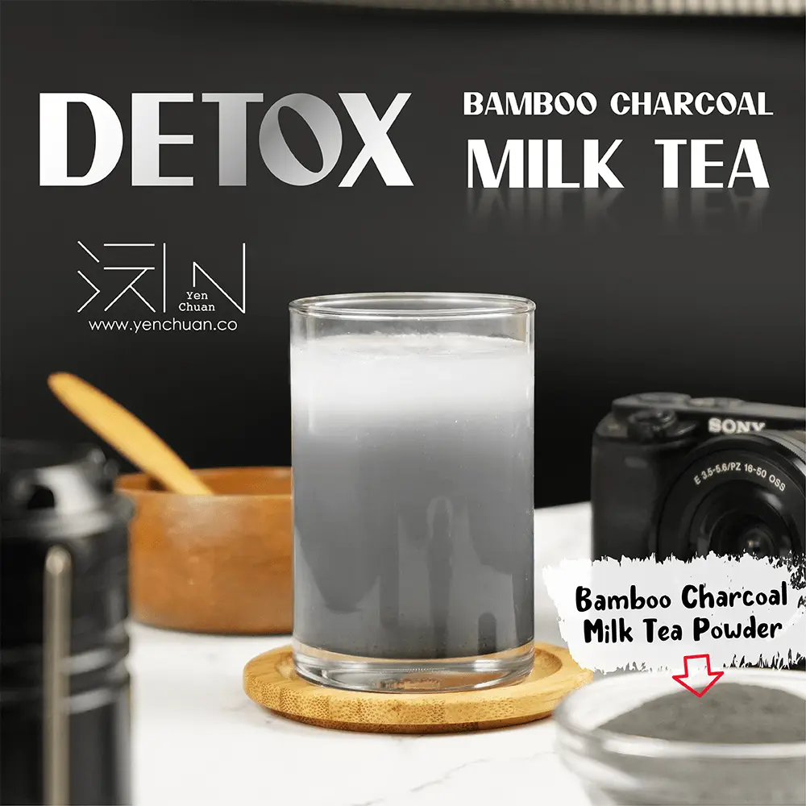
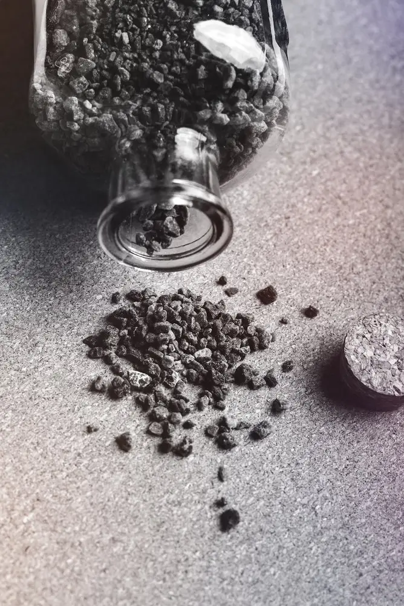

Articles / Recipes
Let’s make detoxing bamboo charcoal milk tea!
2022-11-04 · News, Recipes

We’re all familiar with the classic Taiwanese milk tea, but have you heard about bamboo charcoal milk tea? Drinking charcoal may sound like an odd choice, but it’s actually beneficial for your health!
Read on to learn more:

What is activated charcoal?
We often come across activated charcoal in products for our daily beauty routines, but there’s more to offer than that – it’s also a great way to detox when consumed!
When eaten in recommended doses, it’s said to cleanse your digestive system of unwanted substances. In small amounts like charcoal milk tea, however, it’s both delicious and a nice health boost for your body.
Why charcoal milk tea?
This unique milk tea is a stunning detoxifying drink, with a stone grey appearance that will delight your inner goth.
The activated high-grade charcoal gives the drink its characteristic health benefits, and adds a delicate grainy texture to the drink.
Meanwhile, the milk lends the drink a full-flavored taste, lingering on your mouth to satisfy your sweet tooth. Time to try this unique drink for yourself!

Quick note
Before trying our bamboo charcoal milk tea, avoid taking medications or supplements for at least one hour (or preferably longer) before you enjoy it.
Since activated charcoal is so potent, it may negate the benefits you would get from supplements. While the drink is a great partner to a cold winter’s day, it’s best to keep this in mind!
It’s best to enjoy charcoal milk tea in the evening to wind down before bed. This approach allows the activated charcoal to do its magic while you rest and recharge for the day ahead.
Note:Just like any nutritional supplement, you should talk to your doctor before trying something new. Here’s some more information on activated charcoal to look into!

Detox Bamboo Charcoal Milk Tea
Come and try this unique drink for yourself!
What you’ll need
How to make
Fill the glass with bamboo charcoal milk tea powder and hot water, stir well
Add the ice cubes if needed
Pour in milk and serve
Tip: Pour the milk slowly into the glass for an Instagram-worthy look!
Want something more？ Add a teaspoon of vanilla extract or other flavors of your choice to your milk tea – almond extract, mint syrups, coconut flavoring, or chocolate syrup are all great picks!
Ready to begin?